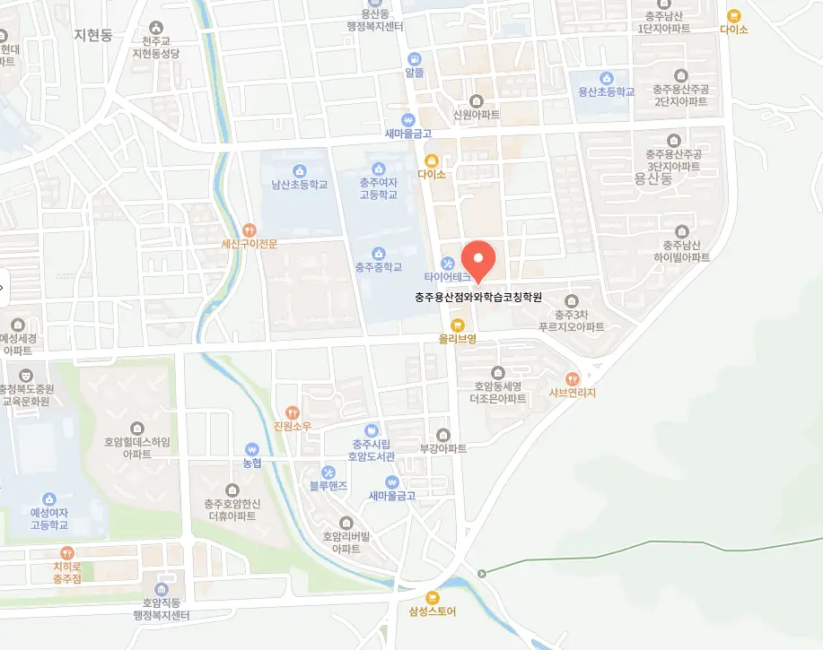

호암동 정시학원
호암동 정시학원
진도 내 소단원별로 성취도 점검표를 작성해 시각적으로 학습 현황을 파악하게 하며, 빨강·노랑·초록 색상으로 이해도를 표시하고, 초록은 완전 이해, 노랑은 약간의 보완 필요, 빨강은 재학습이 필요함을 의미하게 함으로써 자기 주도적인 진도 조절이 가능하게 돕는다. 스스로 잘하고 있는지 확신이 없을 때는 작은 성공 지표를 설정해 구체적인 성과를 기록하고, 이를 통해 자신의 진행 상황을 객관적으로 확인한다. 이 과정에서 단순한 암기나 반복 훈련만으로는 한계에 부딪히며, 학생은 ‘내가 뭘 모르는지도 모른다’는 혼란을 경험한다. 호암동 정시학원은 학습자가 스스로 자신의 공부 스타일을 파악하고, 이를 통해 효율적인 학습 계획을 수립하는 것이 필요합니다. 호암동 정시학원은 버스 노선과 가까운 학원가 중심지에 위치한 장소를 선택한다면, 이동 시간을 최소화하여 그 시간을 복습이나 예습에 활용할 수 있으며, 이는 결국 하루 총 학습 시간의 질을 높이는 데 기여한다. 따라서 학습 자료를 다듬는 과정이 필요하다. 예를 들어, 기말고사 2주 전부터는 진도를 새로 미는 것이 아니라, 강의 노트와 오답노트를 중심으로 복습 형태로 전환하며, 이미 학습한 내용을 '소화'하는 데 집중해야 한다.